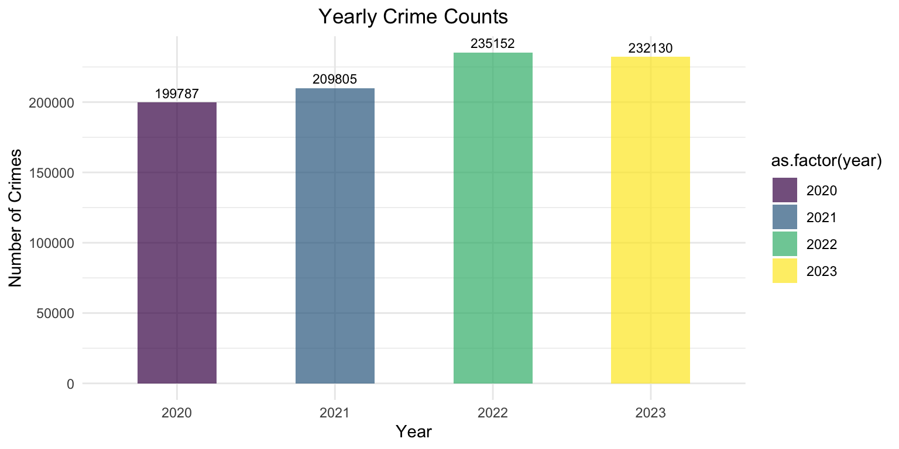

Crime Trends Over Time
Linshan - lx2346
Explore the patterns and trends in crime occurrences based on various time scales (yearly, seasonal, weekdays, and hourly). This web page allows you to visualize how crime evolves over time and across different dimensions.
Overall Trend
First, let’s take a look at the time trend chart of the overall case distribution!
data |>
group_by(year_month, severity) |>
summarise(daily_count = n()) |>
ggplot(aes(x = year_month, y = daily_count, color = severity)) +
geom_line(size = 1) +
labs(title = "Trends in Severe and Non-Severe Crimes",
x = "Time",
y = "Crime Count") +
theme_minimal() +
theme(plot.title = element_text(hjust = 0.5)) Annual Trends
Yearly Crime Counts
This section shows how the frequency of crimes has changed year by
year.
data |>
filter(year != 2024) |>
group_by(year) |>
summarize(count = n()) |>
knitr::kable()| year | count |
|---|---|
| 2020 | 199787 |
| 2021 | 209805 |
| 2022 | 235152 |
| 2023 | 232130 |
data |>
filter(year != 2024) |>
group_by(year) |>
summarize(year_count = n()) |>
ggplot(aes(x = as.factor(year), y = year_count, fill = as.factor(year))) +
geom_bar(stat = "identity", width = 0.5, alpha = 0.7) +
geom_text(aes(label = year_count), vjust = -0.5, size = 3) +
labs(title = "Yearly Crime Counts",
x = "Year",
y = "Number of Crimes") +
theme_minimal() +
theme(plot.title = element_text(hjust = 0.5)) 
The highest number of cases occurred in LA in 2022.
Serious vs. Less Serious Crimes
data |>
filter(year != 2024) |>
group_by(year, severity) |>
summarize(year_count = n()) |>
ggplot(aes(x = as.factor(year), y = year_count, fill = severity)) +
geom_bar(stat = "identity", position = "stack", width = 0.5, alpha = 0.7) +
geom_text(aes(label = year_count, group = severity), position = position_stack(vjust = 0.5)) +
labs(title = "Yearly Crime Counts",
x = "Year",
y = "Number of Crimes") +
theme_minimal() +
theme(plot.title = element_text(hjust = 0.5))
Use chi-squared test to check if there is a significant relationship
between year and crime severity.
year_ser = data |>
filter(year != 2024) |>
group_by(year, severity) |>
summarize(year_count = n()) |>
pivot_wider(
names_from = year,
values_from = year_count
)
knitr::kable(year_ser)| severity | 2020 | 2021 | 2022 | 2023 |
|---|---|---|---|---|
| less serious | 83893 | 86317 | 99665 | 92253 |
| serious | 115894 | 123488 | 135487 | 139877 |
data_matrix = as.table(as.matrix(year_ser[, -1]))
chi_result = chisq.test(data_matrix)
chi_result##
## Pearson's Chi-squared test
##
## data: data_matrix
## X-squared = 387.8, df = 3, p-value < 2.2e-16
This indicates that there are significant differences in the
distribution of severity of cases between years. This means that there
are differences in the proportion of cases occurring in terms of
severity between years. Across all years, 2023 is more likely to have
serious cases, while 2021 is more likely to have less serious cases.
Crime by Area
Now, an interactive line graph is used to show the change in the number of cases occurring in different and years for different case types.
area_year = data |>
filter(year != 2024) |>
group_by(year, area) |>
summarize(year_count = n()) |>
ggplot(aes(x = as.factor(year), y = year_count, color = area, group = area)) +
geom_line(size = 0.5, alpha = 0.5) +
geom_point(size = 0.7) +
labs(title = "Crime Counts by Area Over Time",
x = "Year",
y = "Number of Crimes",
color = "Area") +
theme_minimal() +
theme(plot.title = element_text(hjust = 0.5))
ggplotly(area_year)From the general trend observed in the line chart, the lines show an
overall upward trend from 2021 to 2022, followed by a downward trend
from 2022 to 2023. This indicates that the number of crimes in 2022
increased compared to 2020, 2021, and 2023. Particularly in the Central
area, the number of crimes in 2022 saw a significant increase compared
to 2021. Regarding the frequency of incidents, there are also
significant differences between areas. Areas like Central,
77 Street, and Pacific report a high number of
crimes each year, with annual crime counts exceeding 10,000, and the
peak years even reaching up to 17,000 incidents. In contrast, areas like
Devonshire, Hollenbeck, and
Mission experience fewer crimes each year, with counts
typically ranging from 7,500 to 9,000 incidents.
Crime Types Over Year
crime_year = data |>
filter(year != 2024) |>
group_by(crime_type, year) |>
summarize(year_count = n()) |>
mutate(year_count = ifelse(is.na(year_count), 0, year_count)) |>
ggplot(aes(x = year, y = year_count, color = crime_type, group = crime_type)) +
geom_line(size = 0.3, alpha = 0.5) +
geom_point(size = 0.5) +
labs(title = "Crime Counts by Area Over Time",
x = "Year",
y = "Number of Crimes",
color = "Area") +
theme_minimal() +
theme(plot.title = element_text(hjust = 0.5)) +
theme(legend.position = "none")
ggplotly(crime_year)
As shown in the figure, the most frequent crime categories are
vehicle stolen, battery - simple assault, and
identity theft. The time trends for different crime types
vary across years. While most crime types have a relatively similar
number of incidents each year, there are also types that show a steady
increase in incidents annually (such as vehicle stolen and
petty theft). Additionally, there are types that saw a
sudden spike in 2022, but quickly decreased (such as
battery - simple assault).
Seasonal Trends
Crime Counts By Season
data |>
filter(year != 2024) |>
group_by(season) |>
summarize(count = n()) |>
knitr::kable()| season | count |
|---|---|
| Fall | 220692 |
| Spring | 215610 |
| Summer | 224476 |
| Winter | 216096 |
data |>
filter(year != 2024) |>
group_by(season) |>
summarize(season_count = n()) |>
ggplot(aes(x = as.factor(season), y = season_count, fill = season)) +
geom_bar(stat = "identity", width = 0.5, alpha = 0.7) +
geom_text(aes(label = season_count), vjust = -0.5, size = 3) +
labs(title = "Crime Counts By Season",
x = "Season",
y = "Number of Crimes") +
theme_minimal() +
theme(plot.title = element_text(hjust = 0.5))
Serious vs. Less Serious Crimes
data |>
filter(year != 2024) |>
mutate(season = factor(season, levels = c("Spring", "Summer", "Fall", "Winter"))) |>
group_by(season, severity) |>
summarize(season_count = n()) |>
ggplot(aes(x = as.factor(season), y = season_count, fill = severity)) +
geom_bar(stat = "identity", position = "stack", width = 0.5, alpha = 0.7) +
geom_text(aes(label = season_count, group = severity), position = position_stack(vjust = 0.5)) +
labs(title = "Crime Counts By Season and Severity",
x = "Season",
y = "Number of Crimes") +
theme_minimal() +
theme(plot.title = element_text(hjust = 0.5))
Use chi-squared test to check if there is a significant relationship
between year and crime severity.
season_ser = data |>
filter(year != 2024) |>
mutate(season = factor(season, levels = c("Spring", "Summer", "Fall", "Winter"))) |>
group_by(season, severity) |>
summarize(season_count = n()) |>
pivot_wider(
names_from = season,
values_from = season_count
)
knitr::kable(season_ser)| severity | Spring | Summer | Fall | Winter |
|---|---|---|---|---|
| less serious | 90085 | 93397 | 90138 | 88508 |
| serious | 125525 | 131079 | 130554 | 127588 |
data_matrix = as.table(as.matrix(season_ser[, -1]))
chi_result = chisq.test(data_matrix)
chi_result##
## Pearson's Chi-squared test
##
## data: data_matrix
## X-squared = 58.749, df = 3, p-value = 1.088e-12
This indicates that there are significant differences in the
distribution of severity of cases between seasons. This means that there
are differences in the proportion of cases occurring in terms of
severity between seasons. Across four seasons, Fall is
more likely to have serious cases, while Spring is more
likely to have less serious cases.
Crime by Area
Now, a line graph is used to show the change in the number of cases occurring in different seasons and different case types.
area_season = data |>
filter(year != 2024) |>
mutate(season = factor(season, levels = c("Spring", "Summer", "Fall", "Winter"))) |>
group_by(season, area) |>
summarize(season_count = n()) |>
ggplot(aes(x = as.factor(season), y = season_count, color = area, group = area)) +
geom_line(size = 0.5, alpha = 0.5) +
geom_point(size = 0.7) +
labs(title = "Crime Counts by Area Over Season",
x = "Season",
y = "Number of Crimes",
color = "Area") +
theme_minimal() +
theme(plot.title = element_text(hjust = 0.5))
ggplotly(area_season)Among the four seasons, most areas experience more cases in
summer or autumn, which may be due to
the warmer weather in these seasons, leading to more outdoor activities.
In other regions, the number of cases is relatively balanced throughout
the four seasons. The areas with the highest number of cases are
Central, 77th Street, Pacific,
and Southwest.
Crime Types Over Seasons
crime_year = data |>
filter(year != 2024) |>
mutate(season = factor(season, levels = c("Spring", "Summer", "Fall", "Winter"))) |>
group_by(crime_type, season) |>
summarize(season_count = n()) |>
mutate(season_count = ifelse(is.na(season_count), 0, season_count)) |>
ggplot(aes(x = season, y = season_count, color = crime_type, group = crime_type)) +
geom_line(size = 0.3, alpha = 0.5) +
geom_point(size = 0.5) +
labs(title = "Crime Counts by Crime Type By Season",
x = "Season",
y = "Number of Crimes",
color = "Area") +
theme_minimal() +
theme(plot.title = element_text(hjust = 0.5)) +
theme(legend.position = "none")
ggplotly(crime_year)Overall, most crime types have relatively stable occurrences
throughout the four seasons. Notable seasonal trends include
vehicle stolen, which peaks in autumn,
battery - simple assault and
assault with a deadly weapon, which are most frequent in
summer. Among all crime types,
vehicle stolen and battery - simple assault
stand out with significantly higher case numbers compared to other
types.
Weekday Trends
Crime Counts By Weekday
data |>
group_by(weekday) |>
summarize(count = n()) |>
knitr::kable()| weekday | count |
|---|---|
| Sunday | 136586 |
| Monday | 138516 |
| Tuesday | 134947 |
| Wednesday | 139669 |
| Thursday | 138622 |
| Friday | 150192 |
| Saturday | 144106 |
data |>
group_by(weekday) |>
summarize(weekday_count = n()) |>
ggplot(aes(x = as.factor(weekday), y = weekday_count, fill = weekday)) +
geom_bar(stat = "identity", width = 0.5, alpha = 0.7) +
geom_text(aes(label = weekday_count), vjust = -0.5, size = 3) +
labs(title = "Crime Counts By Weekday",
x = "Weekdays",
y = "Number of Crimes") +
theme_minimal() +
theme(plot.title = element_text(hjust = 0.5))
The number of crimes on Fridays and
Saturdays is significantly higher than on other days of
the week. This is not hard to understand, as people usually attend
parties, nightlife, or other social activities on Fridays and Saturdays,
which may increase the likelihood of violent incidents (such as fights
or assaults) or thefts.
Serious vs. Less Serious Crimes
data |>
group_by(weekday, severity) |>
summarize(weekday_count = n()) |>
ggplot(aes(x = as.factor(weekday), y = weekday_count, fill = severity)) +
geom_bar(stat = "identity", position = "stack", width = 0.5, alpha = 0.7) +
geom_text(aes(label = weekday_count, group = severity), position = position_stack(vjust = 0.5)) +
labs(title = "Crime Counts By Weekday and Severity",
x = "Weekdays",
y = "Number of Crimes") +
theme_minimal() +
theme(plot.title = element_text(hjust = 0.5))
Use chi-squared test to check if there is a significant relationship
between weekdays and crime severity.
weekday_ser = data |>
group_by(weekday, severity) |>
summarize(weekday_count = n()) |>
pivot_wider(
names_from = weekday,
values_from = weekday_count
)
knitr::kable(weekday_ser)| severity | Sunday | Monday | Tuesday | Wednesday | Thursday | Friday | Saturday |
|---|---|---|---|---|---|---|---|
| less serious | 55876 | 57323 | 55257 | 57118 | 56087 | 59282 | 56291 |
| serious | 80710 | 81193 | 79690 | 82551 | 82535 | 90910 | 87815 |
data_matrix = as.table(as.matrix(weekday_ser[, -1]))
chi_result = chisq.test(data_matrix)
chi_result##
## Pearson's Chi-squared test
##
## data: data_matrix
## X-squared = 262.23, df = 6, p-value < 2.2e-16
This indicates that there are significant differences in the
distribution of severity of cases between weekdays. This means that
there are differences in the proportion of cases occurring in terms of
severity between weekdays. Across these weekdays, Saturday and
Friday have more crime cases and are more likely to have
serious cases.
Crime by Area
Now, a line graph is used to show the change in the number of cases occurring in different weekdays and different case types.
area_weekday = data |>
group_by(weekday, area) |>
summarize(weekday_count = n()) |>
ggplot(aes(x = as.factor(weekday), y = weekday_count, color = area, group = area)) +
geom_line(size = 0.5, alpha = 0.5) +
geom_point(size = 0.7) +
labs(title = "Crime Counts by Area Over Weekday",
x = "Weekdays",
y = "Number of Crimes",
color = "Area") +
theme_minimal() +
theme(plot.title = element_text(hjust = 0.5))
ggplotly(area_weekday)
The areas with the highest number of cases are Central,
77th Street, Pacific, and
Southwest. Overall, from the perspective of weekday trends,
the number of crimes decreases from Sunday to Tuesday, remains
relatively stable on Wednesday and Thursday, and then shows a
significant increase on Friday and Saturday.
Crime Types Over Weekdays
crime_weekday = data |>
group_by(crime_type, weekday) |>
summarize(weekday_count = n()) |>
mutate(weekday_count = ifelse(is.na(weekday_count), 0, weekday_count)) |>
ggplot(aes(x = weekday, y = weekday_count, color = crime_type, group = crime_type)) +
geom_line(size = 0.3, alpha = 0.5) +
geom_point(size = 0.5) +
labs(title = "Crime Counts by Crime Type By Weekday",
x = "Weekdays",
y = "Number of Crimes") +
theme_minimal() +
theme(plot.title = element_text(hjust = 0.5)) +
theme(legend.position = "none")
ggplotly(crime_weekday)
Overall, four types of time trends were observed:
1. The highest number of cases occurred on Fridays and Saturdays, with a
sharp increase on Friday, a slight decrease on Saturday, and a return to
baseline on Sunday. Examples include vehicle stolen,
burglary, and petty theft (under $950).
2. The highest number of cases occurred on Saturdays and Sundays, while
the rest of the week remained near the baseline. Examples include
battery - simple assault and
intimate partner - simple assault.
3. The lowest number of cases occurred on Saturdays and Sundays, with
the rest of the week remaining near the baseline. An example is
identity theft.
4. The number of cases was similar across all days of the week, with
minimal fluctuation.
Hourly Trends
Crime Counts By Hour of The Day
count_hour = data |>
mutate(hour_period = as.factor(hour_period)) |>
group_by(hour_period) |>
summarize(hour_count = n()) |>
ggplot(aes(x = hour_period, y = hour_count, fill = hour_period)) +
geom_bar(stat = "identity", width = 0.5, alpha = 0.7) +
labs(title = "Crime Counts By The Hour Of The Day",
x = "Hour Periods",
y = "Number of Crimes") +
theme_minimal() +
theme(plot.title = element_text(hjust = 0.5))
ggplotly(count_hour)
The highest number of cases occurs at noon(12:00) and
in the evening(18:00/19:00).
Serious vs. Less Serious Crimes
ser_hour = data |>
mutate(hour_period = as.factor(hour_period)) |>
group_by(hour_period, severity) |>
summarize(hour_count = n()) |>
ggplot(aes(x = hour_period, y = hour_count, fill = severity)) +
geom_bar(stat = "identity", position = "stack", width = 0.5, alpha = 0.7) +
labs(title = "Crime Counts By Hour Of The Day",
x = "Hour Periods",
y = "Number of Crimes") +
theme_minimal() +
theme(plot.title = element_text(hjust = 0.5))
ggplotly(ser_hour)
Use chi-squared test to check if there is a significant relationship
between hour period of the day and crime severity.
hour_ser = data |>
group_by(hour_period, severity) |>
summarize(hour_count = n()) |>
pivot_wider(
names_from = hour_period,
values_from = hour_count
)
first_half = hour_ser[,1:13]
second_half = hour_ser[,c(1, 14:25) ]
knitr::kable(first_half) | severity | 00 | 01 | 02 | 03 | 04 | 05 | 06 | 07 | 08 | 09 | 10 | 11 |
|---|---|---|---|---|---|---|---|---|---|---|---|---|
| less serious | 19905 | 11554 | 8987 | 7118 | 5738 | 5602 | 10700 | 12077 | 18092 | 17261 | 19255 | 19216 |
| serious | 19863 | 17639 | 15750 | 14646 | 12673 | 11361 | 11928 | 13580 | 18388 | 18469 | 22821 | 23487 |
knitr::kable(second_half)| severity | 12 | 13 | 14 | 15 | 16 | 17 | 18 | 19 | 20 | 21 | 22 | 23 |
|---|---|---|---|---|---|---|---|---|---|---|---|---|
| less serious | 32816 | 19180 | 20145 | 20762 | 19789 | 20727 | 19852 | 18490 | 19231 | 18148 | 17262 | 15327 |
| serious | 33491 | 25408 | 28031 | 30840 | 31961 | 36612 | 38674 | 35775 | 35747 | 31515 | 30713 | 26032 |
data_matrix = as.table(as.matrix(hour_ser[, -1]))
chi_result = chisq.test(data_matrix)
chi_result##
## Pearson's Chi-squared test
##
## data: data_matrix
## X-squared = 13747, df = 23, p-value < 2.2e-16
This indicates that there are significant differences in the
distribution of severity of cases in different hour periods of the day,
which means that there are differences in the proportion of cases
occurring in terms of severity. Across 24 hours of a day, Around
noon, the number of cases increases, but less serious incidents are more
likely to occur. As the evening progresses into midnight, although the
total number of cases decreases, serious incidents become more
likely.
Crime by Area
Now, a line graph is used to show the change in the number of cases occurring in different hour periods of the day and different case types.
area_hour = data |>
group_by(hour_period, area) |>
summarize(hour_count = n()) |>
ggplot(aes(x = as.factor(hour_period), y = hour_count, color = area, group = area)) +
geom_line(size = 0.4, alpha = 0.5) +
geom_point(size = 0.6) +
labs(title = "Crime Counts by Area Over Hour Period of The Day",
x = "Hour Periods",
y = "Number of Crimes",
color = "Area") +
theme_minimal() +
theme(plot.title = element_text(hjust = 0.5))
ggplotly(area_hour)
It can be observed that the distribution of cases by region is similar
to the overall distribution of cases. Two peaks are
evident: the first is a sharp peak occurring at 12:00,
while the second peak, with its highest point around
18:00–19:00 in the evening, forms a gradual slope
spanning across a broader time range.
Crime Types By Hour Period of The Day
crime_hour = data |>
group_by(crime_type, hour_period) |>
summarize(hour_count = n()) |>
mutate(hour_count = ifelse(is.na(hour_count), 0, hour_count)) |>
ggplot(aes(x = hour_period, y = hour_count, color = crime_type, group = crime_type)) +
geom_line(size = 0.3, alpha = 0.5) +
geom_point(size = 0.5) +
labs(title = "Crime Counts by Crime Type By Hour Period of The Day",
x = "Hour Periods",
y = "Number of Crimes") +
theme_minimal() +
theme(plot.title = element_text(hjust = 0.5)) +
theme(legend.position = "none")
ggplotly(crime_hour)
When categorized by crime type, it is evident that the peak times vary
across different types of crimes. Identity theft shows a
pronounced peak at noon (12:00), while vehicle theft or
burglary from vehicles is more likely to occur during the
evening hours (16:00–23:00).